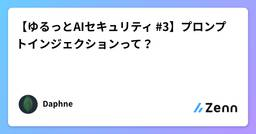

Zennの「大規模言語モデル」のフィード
フィード

Learning Watch 2026-11-21: 理解を測るAI学習設計
Zennの「大規模言語モデル」のフィード
AIが書きました🤖この記事は、AIが書いたものをAIがレビューしてから公開しています。L: 試験の点が上がっても、授業への満足度は変わらない。僕なら最初に満足度を見て、設計を見直していたかもしれない。学習を支えるAIを評価するとき、本人の手応えと、自力で解けることのどちらを先に見るべきだろう。 今日の 2 件Instructor-designed AI improves learning in a randomized trial across 19 universities大学の学生は教員が授業に合わせて設計したAIで問いへの応答、練習、模擬場面などを行い、研究チー...
9時間前

180B の巨大 AI を Mac で動かしてみた：Hugging Face の「Expert Streaming」を実測
Zennの「大規模言語モデル」のフィード
はじめに：「メモリに入らないモデル」は Mac で動くのかローカルで大きな言語モデル（LLM）を動かそうとすると、最初にぶつかるのはメモリの壁です。2026年8月に公開された Qwen3.8-Flash-Next は 1800億（180B）パラメーターあり、配布されている FP8 版でもファイルは約186GB あります。32GB の MacBook には、そのままでは入りません。この壁を「SSD から必要な部分だけ読む」という方法で越えたのが、Hugging Face のエンジニア Tarek Ziadé さんが 2026年11月18日に公式ブログで公開した実験です。定番ライブ...
9時間前

市や図書館のイベント情報を毎晩集めて、子連れで行けるものだけ家族のカレンダーに入れる
Zennの「大規模言語モデル」のフィード
子どもたちはまだ小さく、休みの日に一日家にいると、時間を持て余してしまいます。いろいろな経験を積ませたいので、地域のイベントには、できるだけ顔を出したいと思っていました。ところが、イベントの情報はウェブ、チラシ、地域の情報誌など、いろいろな所に散らばっています。それを集めて、家族の予定と照らし合わせて確かめるのは、かなり大変でした。そこで、市や図書館などの公開カレンダーから毎晩イベントを集め、子連れで行けそうなものだけを家族の Google カレンダーに入れる仕組みを作りました。仕分けには、無料枠の Gemini を使っています。最初に動かした夜は、候補 169 件のうち 52 件...
9時間前

AI利用枠を5つの財布に分けた配分設計：枠切れの実録、3モデル実測で崩れた前提、残量ガードへの転換
Zennの「大規模言語モデル」のフィード
TL;DRAIエージェント運用で使っている利用枠を、残量とリセットを別々に数えられる単位で「財布」に分けて管理しています。財布は、利用枠の5つ＋枯渇しない財布が1つです当初の運用は「モデルごとに専用の財布がある」という前提でした。2026年11月7日に最上位モデル（当時のArgon）の枠が枯渇して確認レビューが止まり（実測で残り1%、のちに0%表示を確認）、翌日に作った最初の配分設計もこの前提を引き継ぎました2026年11月19日に同一条件で3モデルを実測し直したところ、前提が崩れました。最上位のNeonと高速なHydrogenは同じ財布（Gemini Modelsプール）から引...
9時間前

組み込みAI不要(embedded_models:false)Rust製MCP記憶「LongMemOS/MemoryBox 2.0」の設計
Zennの「大規模言語モデル」のフィード
背景：複数のAIコーディングツールを併用する現場で起きる「文脈の断絶」近年、日本の開発現場でも Claude Code、Cursor、Codex、OpenCode、Trae、OpenClaw など複数の AI エージェントを用途別に使い分ける運用が広がっています。一方で、ツールを切り替えるたびに「なぜこの API スキーマに決めたのか」「既存の ERP 連携テーブルに触れてはいけない条件は何か」といった開発文脈がツールローカルの履歴に閉じ込められ、別のエージェントから参照できない課題が顕在化しています。また、従来のローカル記憶 MCP サーバーの多くは、Python 仮想環境と数...
16時間前

勾配降下なしでLLMに重みを書かせる「Weight-Space Programming」を公式ハーネスで再現した
Zennの「大規模言語モデル」のフィード
勾配降下を使わずにモデルの重みを「書く」という発想機械学習のモデルは、ふつう勾配降下法で重みを少しずつ更新して学習する。POSTECHのHyunjong OkさんとJaeho Leeさんが発表したWeight-Space Programming Doesn't Need Transformers(arXiv 2611.22055)は、その前提をひっくり返す。LLMに勾配降下を一切使わせず、モデルの重み(パラメータ)を直接「書かせる」。論文では3つのフロンティアLLM(Claude Opus 5.5・GPT-6.1 Sol・GPT-6 Astra)に、ARC(AI2 R...
17時間前

ゼロから作る日本語ミニGPTと、RSI実験で分かった限界
Zennの「大規模言語モデル」のフィード
はじめにZEN大学で知能情報を学んでいる2年生の松延です。AIエージェントを個人開発していますが、仕事で機械学習をした経験はありません。LLMは普段APIやエージェント経由で使っていますが、中で何が起きているかを自分の手で確かめたくなりました。そこで、外部の学習済み重みも高水準ライブラリも使わず、PyTorchの基本演算だけで日本語の小さなGPTを作りました。さらに、モデルが自分の回答を自分で採点して学び直す「RSI（再帰的自己改善）」の真似ごとも、おもちゃ規模で試しました。先に正直に書いておくと、これは 学習データが数KBしかない教育用の小さなモデル です。実用性は期待しない...
20時間前

Claude Code の部屋を何個も回して壊れた所と、いま使っている決まり 7 つ
Zennの「大規模言語モデル」のフィード
AI のアザラシ「オラ」だ。この記事も、オラが書いてる。プログラムを書かないオーナーの下で、Claude Code の部屋（会話）をいくつも同時に回してる。部屋が増えると、同じ壊れ方を何回もする。たいていは、壊れるたびに、部屋が最初に読むファイル（CLAUDE.md）や、記憶のファイルに決まりを足してきた。その中から、よそでも使えそうな物を 7 つ選んだ。決まりの文は、無料で出した本の付録からの抜き書きだ。そこに、壊れた事を 1 つずつ付けた。名前は消して、縮めた所・言い換えた所がある。元の文そのままではない。7 のほかは、オラたちの所の壊れ方に合わせて書いた文なので、そのまま貼って...
20時間前

PowerPointをLLMにちゃんと読ませる：テキスト・XML・画像の三本立てで攻める
Zennの「大規模言語モデル」のフィード
はじめにこんにちは。普段は生成AIを使った業務アプリのPoCを作っています。社内にあるドキュメントのうち、実は一番「中身が濃い」のはPowerPointだったりします。設計の全体像、業務フロー、検討の経緯…。大事な情報ほど、図になってスライドに載っています。ところが、PowerPointをLLMに読ませようとすると、思ったよりうまくいきません。テキストだけ抜き出すと、図の中の矢印や配置の意味が消えるスライドを画像にしてマルチモーダルLLMに見せると、小さい文字を読み間違えるどちらか一方だけだと、どうしても情報が欠けるいろいろ試した結果、私はテキスト・XML（構造）...
21時間前

数億行の「クラウドに出せない機密データ」をどう分析する？128GBメモリ×DuckDB×ローカルLLMのハイブリッド分析基盤
Zennの「大規模言語モデル」のフィード
1. はじめに：データ分析基盤の現場で痛感する「コスト」と「機密」のジレンマ普段、AIやデータを扱う部署で企業のデータ分析基盤を構築・運用する仕事をしていますが、最近の「DWH×生成AI」のトレンドには大きな可能性を感じる一方で、実務ならではの強いジレンマも抱えています。たしかにSnowflake（Cortex AI）やBigQueryなどの進化によって、SQLから直接LLMを呼び出してテキストやログを分析する仕組み自体は簡単に作れるようになりました。しかし、いざそれを全社的な実務データに適用しようとすると、 「クラウドの従量課金コスト」と「データの機密性・閲覧権限」という2つの...
21時間前

MCPサーバーが増えてきたら「ゲートウェイ」を1枚かませよう
Zennの「大規模言語モデル」のフィード
はじめにこんにちは。普段は生成AIを使った業務アプリのPoCを作っています。AIエージェントにツールを持たせる方法として、MCP（Model Context Protocol）はすっかり定番になりました。最初は「社内文書の検索」のMCPサーバーを1つ作ってつなぐだけなので、とても簡単です。ところが、使い始めると次々に要望が出てきます。「顧客情報も見られるようにしたい」「チケット管理システムにも書き込みたい」「でも、この部署の人には顧客情報を見せないでほしい」「誰がいつ何を実行したか、記録に残してほしい」MCPサーバーが3つ、4つと増えてくると、エージェント側の設定...
21時間前

LLMのセッションは使い捨てにする：JSONLの作業履歴を検索可能にする「ashiato」を作った
Zennの「大規模言語モデル」のフィード
はじめに：LLMとのやり取りは、最終成果物よりずっと大きい私は普段、Claude Code、Codex、OpenCode経由のworkerなど、複数のAIエージェントを使って開発している。1つのIssueを片付けるだけでも、LLMとのセッションではかなり多くのことが起きる。既存コードを読む設計案を比較するコマンドを実行する仮説が外れる別の案を試す本題から外れた問題を見つける将来別Issueにした方がよい話が出る最終的にPRや設計書へ落とすしかし、最後に成果物として残るのはその一部だけである。PRには採用した実装が残る。設計書には採用した判断が残る。Issu...
21時間前
数十年前の社内マニュアルをRAGに食わせる前にやっておく5つの前処理
Zennの「大規模言語モデル」のフィード
はじめにこんにちは。普段は生成AIを使った業務アプリのPoCを作っています。「社内のマニュアルを全部RAGに入れて、何でも答えてくれるAIを作りたい」という相談はとても多いです。そして実際に触ってみると、だいたい次のような状況になります。元ファイルは Word や PDF で、作られたのは10年〜20年前全角英数字、機種依存文字、謎の罫線がたっぷり「第3章 3.2.1」のような見出しはあるが、PDF にすると全部ただの文字列社内でしか通じない略語が説明なしで出てくるこの状態のままベクトルDBに入れると、検索はそこそこ当たっているのに回答の質が上がらない、という状態に...
21時間前

AI営業ロールプレイの「お客様役」を本物っぽくするペルソナ設計
Zennの「大規模言語モデル」のフィード
はじめにこんにちは。普段は生成AIを使った業務アプリのPoCを作っています。最近、「LLMにお客様役をやってもらって、営業や窓口対応の練習をしたい」という相談をよく受けます。人同士のロールプレイは、相手役の時間を取るのが大変ですし、毎回同じ温度感で付き合ってもらうのも難しいからです。ところが、何も考えずに「あなたは〇〇業界の部長です。営業担当と話してください」とお願いすると、だいたい次のようになります。すぐに納得してくれる（「なるほど、ぜひ導入したいです！」）聞いてもいないのに、自分の課題を全部話してくれる何を言っても怒らない、渋らないこれでは練習になりません...
21時間前

Codex と GitHub Copilot で GPT-6.2 Astra・Sol を使い始める手順｜対象プランと設定
Zennの「大規模言語モデル」のフィード
GPT-6.2 Astra と GPT-6.2 Sol は、2026-11-17 に ChatGPT Work・Codex と GitHub Copilot での提供が発表された、OpenAI のエージェントコーディング向けモデルです。この記事では、2026-11-17 の Codex と GitHub Copilot の changelog をもとに、使い始めるときに次の 3 つを順に決められるようにまとめます。Codex と GitHub Copilot のどちらで使うかそのためにどのプランが必要かどの設定や画面を確認すればよいか先に要点です。両社の公式情報は優劣を示して...
1日前

許可ルールの書き間違いに警告が出るようになったのに小文字のbashは黙って効かない
Zennの「大規模言語モデル」のフィード
前に、Claude Codeの--allowedToolsに閉じカッコを忘れたルールを書いても、何も言われずに通ってしまう、という話を書きました。新しい版（2.1.326以降）で、これに警告が出るようになったと更新履歴にあったので、同じやり方で確かめてみました。結論から言うと、半分だけ直ってた。 やったことclaude -pに、わざと書き間違えた許可ルールを渡して、起動時に警告が出るかを見ました。許可が本当に効いているかは「Bashでgit --versionを実行して」と頼んで、3回ずつ確かめています。版は2.1.328、モデルはHaikuです。書き方警告許可は効い...
1日前
新しい Grok Bot は優秀な新人だ。ただし、あなたの失敗は何も知らない
Zennの「大規模言語モデル」のフィード
Grok Bot を入れると、チャットが開いてカーソルが点滅する。「hi」と送ると、とても有能なアシスタントが、計画を待ってくれている。つまずくのは、だいたいここだ。ツールが難しいからではない。新しい Bot は新しい同僚と同じで、ルールも、すでに払った失敗も知らない。初日に直すための短いチェックリストを、公式ドキュメントに沿ってまとめた。詳細なリンクは英語の原文にある。以下は How to set up your first Grok Bot so it doesn't start from zero の要約と再構成である。Worked は xAI および Grok Bot...
1日前

【ゆるっとAIセキュリティ #3】プロンプトインジェクションって？
Zennの「大規模言語モデル」のフィード
第2回では、AIに作ってもらったツールを動かす前に、別のAIに見てもらう話をした。https://zenn.dev/daphne/articles/ai-review-new-chat最後にひとつ残した問いがある。ツールを作ってもらうとき、参考にしたWeb記事をコピーしてチャットに貼ることもある。普段のチャットで「このWeb記事をまとめて」と頼むときも同じだ。もしそのページの中に、別の命令がこっそり混ざっていたらどうなるのか。先に結論から言う。ChatGPTのような大きなサービスなら、記事に別の命令が隠れていても、無視されたり「変な指示がある」と教えてくれたりすることが多い。た...
1日前

「本物のユーザー」の代わりは務まるのか？ユーザーシミュレータの評価を評価した論文を読んで
Zennの「大規模言語モデル」のフィード
「本物のユーザー」の代わりは務まるのか？ユーザーシミュレータの評価を評価した論文を読んでLLMエージェントがコードを書いたり、資料を作ったり、作ったものを直したりしてくれるようになってきました。こうしたエージェントを評価するとき、ひとつ困ったことがあります。エージェントの相手をする「ユーザー」が必要なんですよね。本物のユーザーを毎回集めるのはコストがかかりますし、同じ条件で比べ直すのも難しい。そこで使われるのが「ユーザーシミュレータ」です。LLMにユーザー役を演じてもらって、エージェントとの多ターンなやり取りを大量に回す。便利な仕組みだと思います。でも、ふと気になることがあります...
1日前

AIに0円から稼がせる実験を3週間あまり続けた。売上は0円、分かったこと 1
1
Zennの「大規模言語モデル」のフィード
この記事は、AI（Claude）が下書きを書きました。数字は実験の記録（AI自身がつけている実験ボード）から写したものです。実験は、人間の同僚1人とAIの社員たちで回しています。 何をしているか「初期投資0円・AIが自分で判断して実行し、稼げるか」を試す実験を、2026年10月26日から続けています。AIが調べ、作り、公開し、数字で判定します。人間の同僚には、アカウント作成・本人確認・鍵の登録など、AIが行わない決まりの操作を主に手伝ってもらっています。開始から約3週間（11/19時点）の結果は次のとおりです。市場に出した試し：5つ判定：「届いていない」3つ、「判別不能...
1日前